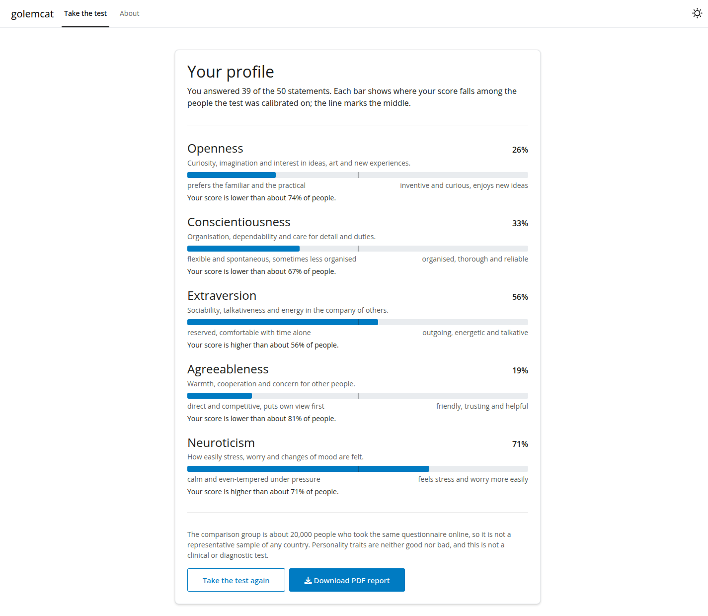

golemcat is an R package with a Shiny app, built with golem, that gives the 50 statements of the IPIP Big-Five Factor Markers as a computerized adaptive test (CAT). Rather than giving everyone the same 50 statements, it picks after every answer the statement that tells the most about the person, and moves on from a trait as soon as its score is precise enough.
Features
The app has two tabs:
- Take the test: the questionnaire as a respondent sees it. One statement at a time with a progress bar, and at the end a profile of the five traits, each as a percentile of the calibration sample, with what a high and a low score mean, and a PDF report of it.
- About: how it works, the acknowledgments and the references.
To see the workings of the adaptive test, the estimate and its standard error after every answer, open the CAT tab of golemirt, which runs it under the rating scale model and five other IRT models, on any questionnaire given as a csv file.
How it works
- Each trait is scored with the rating scale model (Andrich, 1978), with coefficients fitted with
mirtto the answers of 19,718 people. - After every answer the score is estimated by EAP (expected a posteriori), with the normal prior that
mirtestimated for the trait, over a grid of ±6 prior standard deviations. - The next statement is the one with the most Fisher information at that estimate.
- A trait stops when its standardized standard error (SE divided by the prior sd) reaches the threshold, or when its 10 statements run out. A threshold
seaims at a reliability of about 1 − se²: the default 0.40 is about .84 and uses about 43 of the 50 statements.
The engine gives the same results as catR, which the tests check.
Screenshots
The profile at the end of the test, with the PDF report:

Installation
Open RStudio (or an R console) and run:
# Install devtools if you haven't already
install.packages("devtools")
# Install golemcat from GitHub
devtools::install_github("sedzinfo/golemcat")Without devtools, install the source tarball of the latest release, which is rebuilt from main on every change, together with the PDF manual:
install.packages(
"https://github.com/sedzinfo/golemcat/releases/download/latest/golemcat_0.0.0.9000.tar.gz",
repos = NULL, type = "source"
)Usage
library(golemcat)
run_app() # stops each trait at SE 0.40
run_app(se_threshold = 0.45) # shorter: about 36 of the 50 statementsThe engine and the session logic are also functions, for scripts and simulations:
library(golemcat)
q <- ipip50()
s <- cat_start(q$bank, scales = "Extraversion", se_threshold = 0.40)
while (s$stage == "testing") {
cat(cat_item(s)$question, "\n")
s <- cat_answer(s, 4) # the answer, 1 to 5
}
cat_results(s)
report_pdf(cat_results(s), "profile.pdf", q$bank) # needs typst or quartoAny questionnaire fitted with the rating scale model of mirt (itemtype = "rsm") can be read with read_item_bank() and read_likert(); validate_item_bank_against_mirt() checks the bank against the fitted model, item by item.
Calibration
The coefficients are a mirt rating scale model fitted to each trait separately, on the Big Five data of the Open-Source Psychometrics Project (19,718 people, after removing one with missing answers). The 18 reverse-keyed items were reversed (6 − answer) before the fit, and the app reverses the answers to them the same way. The standard deviations of the latent distributions are 0.69 to 0.99.
Two caveats:
- Model fit. The graded response model fits better than the rating scale model (lower AIC and BIC on every trait), because the rating scale model gives every item the same slope and thresholds. The app supports the rating scale model only; the CAT tab of golemirt has the graded and the other models.
- Comparison group. The percentiles compare with the people who took the test online, not with a representative sample of any population. This is a teaching and research tool, not a clinical or diagnostic instrument.
Post hoc CAT on 1,000 real respondents (reliability = 1 − mean SE², standardized):
| SE threshold | statements of 50 | reliability per trait |
|---|---|---|
| all statements | 50 | .79–.89 |
| 0.35 | ~48 | .79–.87 |
| 0.40 | ~43 | .79–.84 |
| 0.45 | ~36 | .77–.81 |
| 0.50 | ~29 | .74–.77 |
Development
| File | Contents |
|---|---|
R/run_app.R |
run_app(), with the help page that describes every tab |
R/app_ui.R, R/app_server.R
|
The navbar with the two tabs, and the server, which starts the modules |
R/mod_test.R, R/mod_about.R
|
One Shiny module per tab |
R/fct_rsm.R |
The rating scale model engine: probabilities, information, item selection, EAP |
R/fct_item_bank.R |
Reading and checking item banks, and the IPIP-50 |
R/fct_cat.R |
The CAT session: start, next item, answer, results |
R/fct_report.R, inst/report/
|
The PDF report: the typst template and its fonts (Manrope, SIL Open Font License) |
inst/extdata/ |
The IPIP-50 item bank and answer options |
tests/testthat/ |
Tests of the engine (against catR), the item bank, the session, the report, the modules and the page |
Run the tests with devtools::test() and the full check with devtools::check(). generate_package.R documents, tests and installs the package, and builds the PDF manual and the tarball.
Acknowledgments
The statements are the Big-Five Factor Markers of the International Personality Item Pool (Goldberg, 1992), in the public domain. The calibration data is from the Open-Source Psychometrics Project. The models were fitted with mirt, and the engine follows catR.
References
- Andrich, D. (1978). A rating formulation for ordered response categories. Psychometrika, 43(4), 561-573.
- Chalmers, R. P. (2012). mirt: A multidimensional item response theory package for the R environment. Journal of Statistical Software, 48(6), 1-29.
- Goldberg, L. R. (1992). The development of markers for the Big-Five factor structure. Psychological Assessment, 4(1), 26-42.
- Magis, D., & Barrada, J. R. (2017). Computerized adaptive testing with R: Recent updates of the package catR. Journal of Statistical Software, 76(1), 1-19.
- van der Linden, W. J., & Glas, C. A. W. (Eds.) (2010). Elements of Adaptive Testing. Springer.